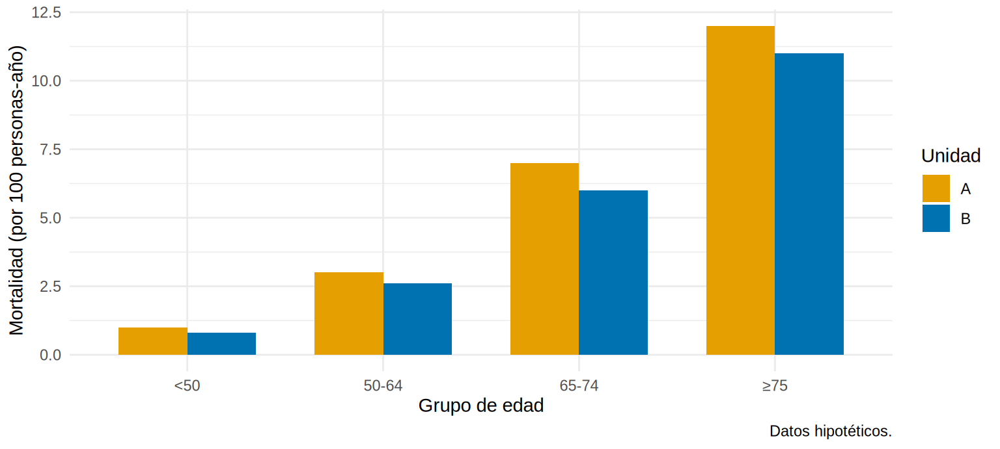

Estandarización por edad: comparar tasas con justicia
Nota🩺 Escenario (datos hipotéticos)
La jefa de dos unidades de hemodiálisis, A y B, recibe el informe anual de mortalidad: la unidad B parece peor. Pero la dra. de la unidad B protesta: “mis pacientes son bastante mayores”. ¿Quién tiene razón? Para saberlo hay que comparar las unidades como si atendieran pacientes de la misma edad. Eso es estandarizar.
Lo que vamos a hacer
Ver cómo una tasa cruda puede invertir la conclusión cuando las edades son distintas (paradoja de Simpson).
Calcular una tasa estandarizada directa (con su IC) y una razón de mortalidad estandarizada (RME, estandarización indirecta).
Aplicar la misma lógica a la base ckd_isglt2 (simulada) y comparar con la verdad.
Paso 1. Los datos: dos unidades, cuatro grupos de edad
Cada fila es un grupo de edad de una unidad, con las personas-año de seguimiento y las muertes. La tasa es muertes por 100 personas-año. Los números son hipotéticos.
# A tibble: 2 × 4
unidad muertes personas_anio tasa_cruda
<chr> <dbl> <dbl> <dbl>
1 A 101 2500 4.04
2 B 179 2650 6.75
La unidad B tiene una mortalidad cruda mayor: 6.75 frente a 4.04 por 100 personas-año, es decir, 67 % más.
Paso 3. …y los grupos de edad dicen lo contrario
Mira ahora la tasa dentro de cada grupo de edad:
ggplot(unidades, aes(edad, tasa, fill = unidad)) +geom_col(position ="dodge", width =0.7) +scale_fill_manual(values =c(A ="#E69F00", B ="#0072B2"), name ="Unidad") +labs(x ="Grupo de edad", y ="Mortalidad (por 100 personas-año)",caption ="Datos hipotéticos.") +theme_minimal(base_size =11)

Qué vemos. En todos los grupos de edad, la unidad B tiene una mortalidad menor que la A. Y sin embargo, en conjunto, parece peor. La causa: 38 % de las personas-año de B son de pacientes de 75 años o más (en A, solo 8 %), y ese grupo muere mucho más. Es la paradoja de Simpson: la edad es un confusor de la comparación entre unidades.
Paso 4. Estandarización directa
La idea: aplicar la tasa específica por edad de cada unidad a una misma población estándar y promediar. Cada grupo de edad pesa según su proporción en el estándar:
El estándar puede ser una población de referencia (la estándar mundial de la OMS, el censo del país) o, como aquí, la suma de las dos unidades. Calculamos pesos, tasa estandarizada y un IC aproximado con la varianza de Poisson \(\sum w_i^2 \, d_i / PA_i^2\):
# A tibble: 2 × 5
unidad tasa_estandarizada ee inf sup
<chr> <dbl> <dbl> <dbl> <dbl>
1 A 5.85 0.674 4.53 7.18
2 B 5.18 0.410 4.38 5.98
La función estandarizar_directa() (en R/funciones_extra_cap78.R) hace exactamente lo mismo para cualquier tipo de estratos, y razon_estandarizada() calcula la razón de las dos tasas con su IC:
res <-estandarizar_directa(unidades, grupo ="unidad", estrato ="edad",eventos ="muertes", denominador ="personas_anio", tipo ="tasa")res |>mutate(across(where(is.numeric), \(x) round(x, 2)))
# A tibble: 2 × 6
grupo crudo estandarizado ee inf sup
<chr> <dbl> <dbl> <dbl> <dbl> <dbl>
1 A 4.04 5.85 0.67 4.53 7.18
2 B 6.75 5.18 0.41 4.38 5.98
rr_ab <-razon_estandarizada(res, numerador ="B", referencia ="A")rr_ab |>mutate(across(everything(), \(x) round(x, 2)))
Qué vemos. Cruda, B era 67 % peor. Estandarizada, la tasa de B es 5.18 frente a 5.85 de A: la dirección se invierte (razón estandarizada 0.88). Pero el IC de la razón (0.67-1.16) incluye 1: con tan pocas muertes la diferencia real es modesta e imprecisa. Lo que desaparece al estandarizar es la “desventaja” aparente de B, que solo se debía a atender pacientes mayores.
Paso 5. Estandarización indirecta: la RME
La directa exige tasas por edad estables en cada población. Con pocos eventos (centros pequeños) esas tasas bailan mucho. Entonces se usa la indirecta: se toman las tasas de una población de referencia, se calculan las muertes esperadas en nuestra población si tuviera esas tasas y se divide lo observado entre lo esperado. Es la razón de mortalidad estandarizada (RME):
## IC exacto de Poisson para la RMEpt <-poisson.test(indirecta$observadas, indirecta$esperadas)c(RME =unname(pt$estimate), pt$conf.int)
RME
0.8927681 0.7667685 1.0335643
Cómo se lee. Con las tasas por edad de la unidad A, a B le “tocaban” 200 muertes y tuvo 179: RME = 0.89 (IC 0.77-1.03). Una RME < 1 significa menos muertes que las esperadas; si el IC contiene 1, no hay evidencia de diferencia. Es la medida clásica para comparar centros de diálisis (mortalidad, hospitalizaciones, trasplante).
¿Cuál usar? La directa compara tasas entre varias poblaciones con un mismo estándar, pero necesita tasas por edad estables en cada una (muchas muertes por estrato). La indirecta solo necesita la estructura de edad del centro y las tasas de referencia; es la elegida con pocos eventos, aunque cada RME usa su propia estructura de edad y por eso no conviene comparar RME entre sí con ligereza.
Paso 6. Con paquetes especializados (no se ejecutan aquí)
Los paquetes dsr y PHEindicatormethods hacen estas estandarizaciones (con IC por el método gamma) y trabajan con estratos de edad y sexo a la vez. Sus llamadas, adaptadas a nuestros datos:
# Con el paquete dsr (no se ejecuta aquí): estandarización directadsr::dsr(data = unidades, event = muertes, fu = personas_anio, subgroup = unidad, edad, # estrato(s) por los que se estandarizarefdata = estandar |>rename(pop = pa_estandar) |>select(edad, pop),method ="gamma", sig =0.95, mp =100, decimals =2)# Con el paquete PHEindicatormethods (no se ejecuta aquí)library(PHEindicatormethods)unidades |>left_join(estandar |>select(edad, pa_estandar), by ="edad") |>group_by(unidad) |>phe_dsr(x = muertes, n = personas_anio, stdpop = pa_estandar, stdpoptype ="field") # directa# Indirecta: tasas de referencia (x_ref, n_ref) de otra población, p. ej., la unidad Aref_A <- unidades |>filter(unidad =="A")unidades |>filter(unidad =="B") |>calculate_ISRate(x = muertes, n = personas_anio, x_ref = ref_A$muertes, n_ref = ref_A$personas_anio)
Paso 7. Otra mirada: el caso del iSGLT2 en ckd_isglt2
La misma lógica compara el riesgo de evento renal a 36 meses entre tratados y no tratados, estandarizando por edad (aquí con proporciones, porque todos los pacientes se siguen 36 meses o hasta el evento). Usamos la versión con “oráculo” para conocer la verdad: el RR causal a 36 meses si todos recibieran el fármaco frente a nadie.
ckd <-read_csv("Bases/ckd_isglt2_oraculo.csv", show_col_types =FALSE) |>mutate(gedad =cut(edad, c(0, 59, 69, 79, 100), labels =c("<60", "60-69", "70-79", "≥80")))verdad_rr <-mean(ckd$evento_36m_1) /mean(ckd$evento_36m_0) # verdad (solo existe porque simulamos)## Una fila por tratamiento x grupo de edadpor_edad <- ckd |>group_by(isglt2, gedad) |>summarise(eventos =sum(evento), n =n(), .groups ="drop") |>mutate(isglt2 =if_else(isglt2 ==1, "Con iSGLT2", "Sin iSGLT2"))est_edad <-estandarizar_directa(por_edad, grupo ="isglt2", estrato ="gedad",eventos ="eventos", denominador ="n", tipo ="riesgo")est_edad |>mutate(across(where(is.numeric), \(x) round(x, 1))) # riesgos en %
# A tibble: 2 × 6
grupo crudo estandarizado ee inf sup
<chr> <dbl> <dbl> <dbl> <dbl> <dbl>
1 Con iSGLT2 10.9 11.7 0.7 10.3 13.1
2 Sin iSGLT2 19.2 17.7 0.7 16.3 19.2
Ahora el RR crudo, el estandarizado por edad y, para ver el efecto de añadir un factor, el estandarizado por edad y sexo juntos (8 estratos):
# A tibble: 4 × 2
analisis RR
<chr> <dbl>
1 RR crudo 0.567
2 RR estandarizado por edad 0.659
3 RR estandarizado por edad y sexo 0.661
4 Verdad (oráculo) 0.736
Qué vemos. El RR crudo (0.57) exagera el beneficio: los tratados son más jóvenes. Estandarizar por edad lo acerca a la verdad (0.74): sube a 0.66, aunque no la alcanza. Añadir el sexo casi no cambia nada, porque el sexo estaba balanceado en la Tabla 1 (Cap. 7.2). Pero queda confusión residual: la albuminuria y la TFGe también están desbalanceadas, y la fragilidad ni siquiera se mide. Estandarizar por pocos factores corrige solo esos factores; para muchos se necesitan modelos (Cap. 8) o ponderación (Cap. 12).
Advertencia⚠️ Trampas frecuentes
Comparar dos RME entre sí: cada una usa su propia estructura de edad; para comparar muchos centros entre sí conviene la directa (u otros métodos).
Estandarizar y creer que ya está ajustado por todo: la estandarización corrige únicamente por los estratos que usaste. Si quedan confusores sin medir, el resultado sigue sesgado.
Estratos con muy pocos eventos: producen tasas inestables. Junta categorías de edad (de 10 o 15 años en vez de 5) o pasa a la indirecta.
Importante🎯 En resumen
Comparar tasas crudas entre poblaciones con distinta edad puede invertir la conclusión (paradoja de Simpson).
Directa: aplica las tasas por edad de cada población a un estándar común; indirecta: compara observadas con esperadas (RME).
La directa es el mismo mecanismo que la g-fórmula (Cap. 12): calcular el riesgo en cada estrato de confusores y promediar con los pesos de una población estándar. Si el estándar es toda la población del estudio, estima el efecto de “todos tratados frente a nadie tratado” siempre que los confusores incluidos basten.
Estandarizar por una sola variable no basta si hay otros confusores.
Ejercicio
Recalcula la tasa estandarizada usando como estándar la distribución de la unidad A (en lugar de la suma). ¿Cambia la conclusión?
Calcula la RME de la unidad A usando como referencia las tasas de la unidad B.
En ckd_isglt2, estandariza el riesgo por edad, sexo y ECV a la vez (16 estratos). ¿Se acerca más el RR a la verdad?
Nota editorial
Los datos de las unidades A y B son hipotéticos; la base ckd_isglt2 es simulada. Capítulo redactado con asistencia de IA y revisado por el autor.